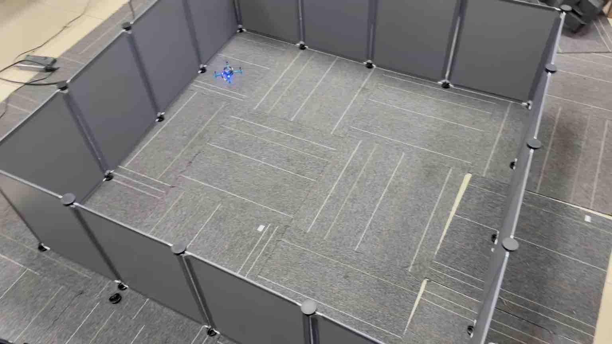

Experiment 4: Multi-ranger Sensor Experiment
Confirm the Group URI Before Running
Python scripts in this experiment read the complete radio URI assigned in Experiment 3 from the CFLIB_URI environment variable. Do not copy the group address into every code file. In each new terminal, check it first:
echo "$CFLIB_URI"The output must exactly match the complete URI on the group label, including the interface, channel, data rate, and address. If it is empty or incorrect, repeat the “Save the complete URI in the virtual machine” step in Experiment 3 before running the script.
1. Experimental goals
Learn the principles of the new sensor multiranger.
Learn the programming methods related to the multiranger sensor in the cflib library.
2. Experimental preparation
The virtual machine system of the client connected to the drone has been configured previously. And you need to have the Linux system operating experience accumulated in the previous experiments. A little more basic python programming is needed.
Hardware equipment needed in this experiment:
- Crazyflie 2.0
- Crazyradio PA
- Flow deck
- Multiranger deck
3. Experimental steps
This experiment mainly runs Python scripts. Open the Bitcraze cflib User Guides directly:
https://www.bitcraze.io/documentation/repository/crazyflie-lib-python/master/user-guides/If you encounter difficulties during the experiment, open the URL listed above for further reference. Some operations and knowledge points are also mentioned in the previous experiment manual; this part is not repeated here.
The Multiranger Deck features multiple ultrasonic sensors to detect obstacles around the Crazyflie. This helps the drone avoid collisions indoors or in environments with obstacles. The installation method is shown in the figure below:

Figure 1 shows the flow deck installed below

Figure 2 shows multi-ranger installed on it

The official tutorial URL for this module: Multi-ranger deck | Bitcraze
Experiment 1: Understand the role of multi-ranger
The multi-ranging deck enables the drone to detect surrounding objects. This is achieved by measuring the distance of objects in the following 5 directions: front/back/left/right/up, with a detection distance of up to 4 meters.
To get the most out of your multi-rangefinder, it should be paired with the Flow deck V2, which will measure movement along the ground and distance to the ground. It allows Crazyflie to sense the space around it and react when something is approaching, such as avoiding obstacles. It also allows starting to deal with environment awareness problems such as Simultaneous Localization and Mapping (SLAM) algorithms.
Next, in the programming library cflib that controls drone flight, the multiranger class implements the call to this module. For the specific implementation of this library, see the file multiranger.py.

It can be seen that in the multiranger.py file, the member attributes of the multiranger class are defined. The multiranger sensor will return six parameters when working: front, back, left, right, up and down. Corresponding to the distance of the drone from obstacles in six directions, how to call the multiranger module and check its working status?
Next, run the code below on the virtual machine and call the multiranger module on the drone. The specific operation process should be familiar to everyone. Let’s briefly review it here. Create a python file named multiranger_paramet.py in the workspace folder of the virtual machine. Copy and paste the following code into multiranger_paramet.py. The main function of this code is to remotely connect the drone with the wireless module, implement a multiranger class, call the multiranger module through this class, and output the return value of the module in the terminal. In this code, the distance in front of the multiranger module, that is, the front of the drone, from the obstacle is returned, in meters.
Download the reviewed script: multiranger_read.py
#!/usr/bin/env python3
"""Print Multi-ranger readings for 30 seconds without arming the aircraft."""
import threading
import time
import cflib.crtp
from cflib.crazyflie import Crazyflie
from cflib.crazyflie.syncCrazyflie import SyncCrazyflie
from cflib.utils import uri_helper
from cflib.utils.multiranger import Multiranger
URI = uri_helper.uri_from_env(default="")
READ_TIME_S = 30.0
def wait_for_multiranger(scf):
attached = threading.Event()
def callback(name, value):
if int(value):
attached.set()
scf.cf.param.add_update_callback(
group="deck", name="bcMultiranger", cb=callback
)
time.sleep(1.0)
return attached.wait(timeout=4.0)
def main():
if not URI:
raise RuntimeError("CFLIB_URI is empty; configure the group URI first.")
cflib.crtp.init_drivers()
with SyncCrazyflie(URI, cf=Crazyflie(rw_cache="./cache")) as scf:
if not wait_for_multiranger(scf):
raise RuntimeError("Multi-ranger deck was not detected.")
with Multiranger(scf) as multiranger:
deadline = time.monotonic() + READ_TIME_S
try:
while time.monotonic() < deadline:
print(
"front=%s back=%s left=%s right=%s up=%s down=%s"
% (
multiranger.front,
multiranger.back,
multiranger.left,
multiranger.right,
multiranger.up,
multiranger.down,
)
)
time.sleep(0.1)
except KeyboardInterrupt:
print("Reading stopped by the operator.")
if __name__ == "__main__":
main()
Now, you can check the distance from the obstacle in front of the drone returned by the multiranger module through the cflib library function call. Now, based on the content of multiranger.py that you have viewed previously, call the properties of the multiranger class to check the distance from the obstacle in the other five directions (back, left, right, up, down), and output it in the terminal.
Experiment 2: "Push" Drones
Now use the multiranger module combined with the flow deck module to achieve some interesting effects.
Create a python file named multiranger_push.py in the workspace folder of the virtual machine, and copy and paste the following code into multiranger_push.py. The running effect of this code is that the drone will automatically generate a hover at the default height. If it detects an obstacle within 0.2 meters, it will fly in the opposite direction and automatically avoid the obstacle. If you approach it manually, it will be like pushing it away. If your hand is close to the top of the drone, it will also react and slowly lower its altitude to land.
Try changing some parameters slightly to make the drone more sensitive? Let it start reacting at a distance of 0.3 meters or 0.4 meters.
Download the reviewed script: multiranger_push.py
#!/usr/bin/env python3
"""Low-speed reactive Multi-ranger demonstration with a flight-time limit."""
import math
import threading
import time
import cflib.crtp
from cflib.crazyflie import Crazyflie
from cflib.crazyflie.syncCrazyflie import SyncCrazyflie
from cflib.positioning.motion_commander import MotionCommander
from cflib.utils import uri_helper
from cflib.utils.multiranger import Multiranger
URI = uri_helper.uri_from_env(default="")
MIN_DISTANCE_M = 0.18
VELOCITY_MPS = 0.20
MAX_FLIGHT_TIME_S = 60.0
def is_close(value):
return value is not None and math.isfinite(value) and value < MIN_DISTANCE_M
def request_arming(scf, armed):
for service_name in ("platform", "supervisor"):
service = getattr(scf.cf, service_name, None)
request = getattr(service, "send_arming_request", None)
if request is not None:
request(armed)
return
raise RuntimeError("This cflib version has no arming service.")
def wait_for_decks(scf):
attached = {
"bcFlow2": threading.Event(),
"bcMultiranger": threading.Event(),
}
def callback(name, value):
deck_name = name.rsplit(".", 1)[-1]
if deck_name in attached and int(value):
attached[deck_name].set()
for deck_name in attached:
scf.cf.param.add_update_callback(
group="deck", name=deck_name, cb=callback
)
time.sleep(1.0)
return all(event.wait(timeout=4.0) for event in attached.values())
def main():
if not URI:
raise RuntimeError("CFLIB_URI is empty; configure the group URI first.")
cflib.crtp.init_drivers()
with SyncCrazyflie(URI, cf=Crazyflie(rw_cache="./cache")) as scf:
if not wait_for_decks(scf):
raise RuntimeError(
"Flow deck or Multi-ranger deck was not detected; takeoff cancelled."
)
armed = False
try:
request_arming(scf, True)
armed = True
time.sleep(1.0)
with MotionCommander(scf, default_height=0.35) as commander:
with Multiranger(scf) as multiranger:
deadline = time.monotonic() + MAX_FLIGHT_TIME_S
while time.monotonic() < deadline:
if is_close(multiranger.up):
commander.stop()
break
velocity_x = 0.0
velocity_y = 0.0
if is_close(multiranger.front):
velocity_x -= VELOCITY_MPS
if is_close(multiranger.back):
velocity_x += VELOCITY_MPS
if is_close(multiranger.left):
velocity_y -= VELOCITY_MPS
if is_close(multiranger.right):
velocity_y += VELOCITY_MPS
commander.start_linear_motion(velocity_x, velocity_y, 0.0)
time.sleep(0.1)
commander.stop()
finally:
if armed:
request_arming(scf, False)
if __name__ == "__main__":
main()
Reference links
This section organizes external links that appear in the manual into bullet points that are readable offline. To prevent the material from being too long, the web content is summarized in the form of classroom purposes and key tips, and the original URL is retained for reference after class.
- Bitcraze cflib User Guide (Web title: User guides | Bitcraze)
Original link: https://www.bitcraze.io/documentation/repository/crazyflie-lib-python/master/user-guides/
Classroom purposes: Query cflib examples, connection methods, log reading and control interfaces.
- This document is suitable as an API reference entry for Python control scripts.
- Class-related highlights include SyncCrazyflie, MotionCommander, logging configuration, parameter reading, and sample program structures.
- It is recommended to run through the scripts provided in the class first, and then return to the official examples to find alternative control methods.
- Bitcraze Multi-ranger deck product description (webpage title: Multi-ranger deck | Bitcraze)
Original link: https://www.bitcraze.io/products/multi-ranger-deck/
Classroom purpose: Understand the ranging direction, applicable scenarios and hardware limitations of the multiranger expansion board.
- The multiranger is used to sense close obstacles in the front, back, left, right, upward and other directions.
- Use it in the classroom to achieve obstacle avoidance, wall flying, distance-triggered actions and mapping data collection.
- The actual effect will be affected by reflective surfaces, obstacle materials, flight speed and attitude stability.
On-site Test Setup
This setup is used to verify the correspondence between Multi-ranger readings and the relative positions of the baffles.
